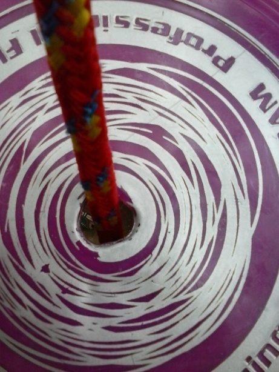
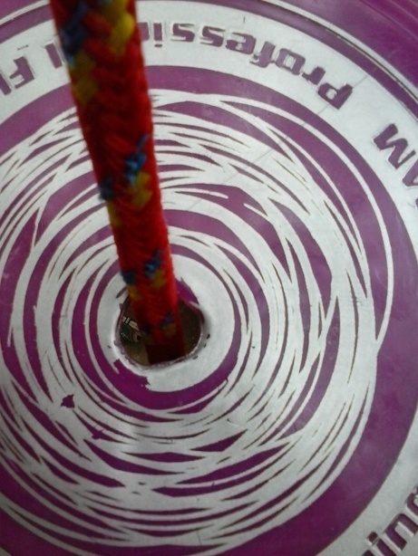
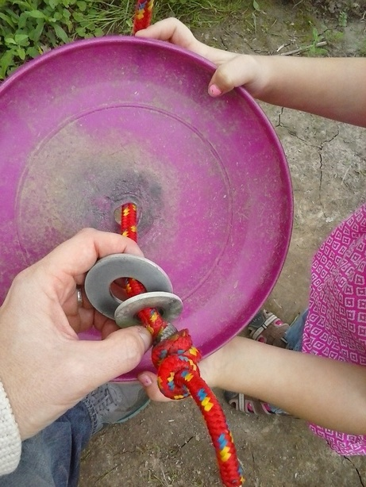
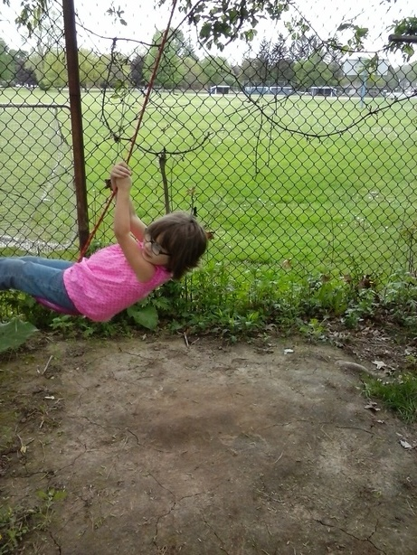
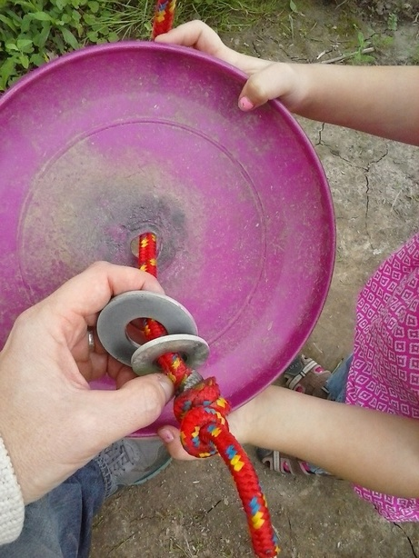
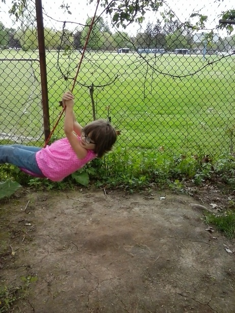

So, my kids can't get enough of this stupid swing I made with an old frisbee and some nylon rope (and a blow torch--spoiler: FIRE!), so I thought I'd post it. In fact, they're currently fighting over it in the yard as I try to post the photos below.
It holds easily a 50 lb. child jumping on it, and it's been up for at least 4 years now. It's really rugged, and the key is the blow torch. If you cut a hole in something, you make tiny cracks that can (and usually do) grow under stress. If you melt a hole in the frisbee, two cool things happen that make it really strong. First, the plastic recedes from the hole to make a hard, thick, strong rim. Second, the rim is formed smooth and has no cracks.
Here's how to make it. You will need:
- a strong plastic frisbee
- a small blow torch
- 1/2 " rope
- several sizes of washers from 1/2 " up to 1.5"
- wire cutters
Instructions:
- Put the frisbee on an outdoor fireproof surface, such as wet earth. Think carefully about this.
- Holding the tip of the flame an inch or two away from the center of the frisbee, carefully melt a hole slightly less than 1/2" in diameter. Remove the torch immediately, because the hole will continue to grow slightly.
- Let the frisbee cool for several minutes, while you hang the top of the rope, cut to the desired length with the cutters.
- Put the rope through the hole in the frisbee, slide on a stack of washers and tie a figure-8 knot.
When you put on the washers, keep in mind that the purpose of the several sizes is to make sure that the knot will not go through the smallest washer and the largest washer is much larger than the hole in the frisbee.
In no time, your kids will be fighting over it too!
 

 


